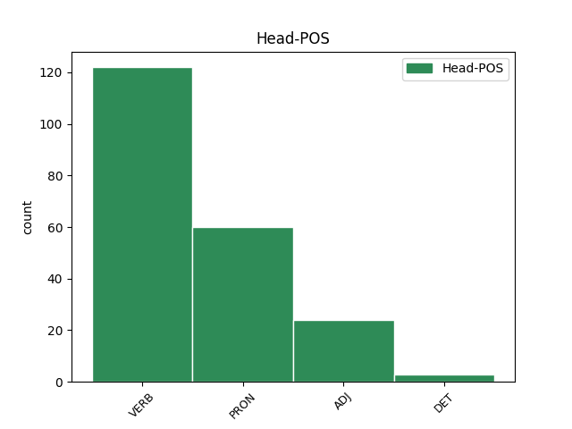
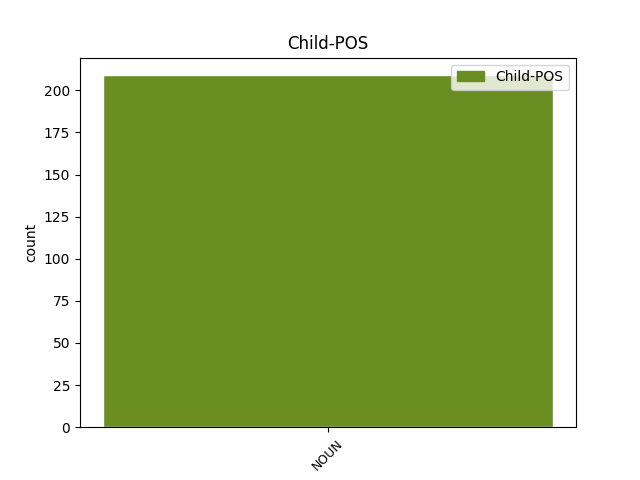

Distribution of features within this leaf



Agreement Rules sorted by frequency.
- When the dependent token is the predicative complements(comp:pred) of the head token, and the head token is VERB and the dependent token is NOUN.
1 πρύτανις πρύτανις NOUN n-s---mn- Case=Nom|Gender=Masc|Number=Sing 3 comp:pred _ _
2 ἄκριτος _ _ _ _ 0 _ _ _
3 ὤν εἰμί VERB v-sppamn- Case=Nom|Gender=Masc|Number=Sing|Tense=Pres|VerbForm=Part|Voice=Act 0 _ _ _
4 , _ _ _ _ 0 _ _ _
5 κρατύνεις _ _ _ _ 0 _ _ _
6 βωμόν _ _ _ _ 0 _ _ _
7 , _ _ _ _ 0 _ _ _
8 ἑστίαν _ _ _ _ 0 _ _ _
9 χθονός _ _ _ _ 0 _ _ _
10 , _ _ _ _ 0 _ _ _
11 μονοψήφοισι _ _ _ _ 0 _ _ _
12 νεύμασιν _ _ _ _ 0 _ _ _
13 σέθεν _ _ _ _ 0 _ _ _
14 , _ _ _ _ 0 _ _ _
15 μονοσκήπτροισι _ _ _ _ 0 _ _ _
16 δ̓ _ _ _ _ 0 _ _ _
17 ἐν _ _ _ _ 0 _ _ _
18 θρόνοις _ _ _ _ 0 _ _ _
19 χρέος _ _ _ _ 0 _ _ _
20 πᾶν _ _ _ _ 0 _ _ _
21 ἐπικραίνεις _ _ _ _ 0 _ _ _
22 · _ _ _ _ 0 _ _ _
1 ἐμοῦ ἐγώ PRON p-s---mg- Case=Gen|Gender=Masc|Number=Sing 0 _ _ _
2 δ̓ _ _ _ _ 0 _ _ _
3 ἄνακτος ἄναξ NOUN n-s---mg- Case=Gen|Gender=Masc|Number=Sing 1 comp:pred _ _
4 εὐλόγως _ _ _ _ 0 _ _ _
5 ἐπώνυμον _ _ _ _ 0 _ _ _
6 γένος _ _ _ _ 0 _ _ _
7 Πελασγῶν _ _ _ _ 0 _ _ _
8 τήνδε _ _ _ _ 0 _ _ _
9 καρποῦται _ _ _ _ 0 _ _ _
10 χθόνα _ _ _ _ 0 _ _ _
11 . _ _ _ _ 0 _ _ _
1 τοὶ ὁ PRON p-p---mn- Case=Nom|Gender=Masc|Number=Plur 0 _ _ _
2 δ̓ _ _ _ _ 0 _ _ _
3 ἄμυδις _ _ _ _ 0 _ _ _
4 προγένοντ̓ _ _ _ _ 0 _ _ _
5 ἴκελοι _ _ _ _ 0 _ _ _
6 πυρὶ _ _ _ _ 0 _ _ _
7 ἠὲ _ _ _ _ 0 _ _ _
8 θυέλλῃ _ _ _ _ 0 _ _ _
9 , _ _ _ _ 0 _ _ _
10 Κύκνος Κύκνος NOUN n-s---mn- Case=Nom|Gender=Masc|Number=Sing 1 appos _ _
11 θ̓ _ _ _ _ 0 _ _ _
12 ἱππόδαμος _ _ _ _ 0 _ _ _
13 καὶ _ _ _ _ 0 _ _ _
14 Ἄρης _ _ _ _ 0 _ _ _
15 ἀκόρητος _ _ _ _ 0 _ _ _
16 ἀυτῆς _ _ _ _ 0 _ _ _
17 . _ _ _ _ 0 _ _ _
1 ὅπως _ _ _ _ 0 _ _ _
2 δ̓ _ _ _ _ 0 _ _ _
3 ὅμαιμον _ _ _ _ 0 _ _ _
4 αἷμα _ _ _ _ 0 _ _ _
5 μὴ _ _ _ _ 0 _ _ _
6 γενήσεται _ _ _ _ 0 _ _ _
7 , _ _ _ _ 0 _ _ _
8 δεῖ _ _ _ _ 0 _ _ _
9 κάρτα _ _ _ _ 0 _ _ _
10 θύειν _ _ _ _ 0 _ _ _
11 καὶ _ _ _ _ 0 _ _ _
12 πεσεῖν _ _ _ _ 0 _ _ _
13 χρηστήρια χρηστήριος ADJ a-p---na- Case=Acc|Gender=Neut|Number=Plur 0 _ _ _
14 θεοῖσι _ _ _ _ 0 _ _ _
15 πολλοῖς _ _ _ _ 0 _ _ _
16 πολλά _ _ _ _ 0 _ _ _
17 , _ _ _ _ 0 _ _ _
18 πημονῆς _ _ _ _ 0 _ _ _
19 ἄκη ἄκος NOUN n-p---na- Case=Acc|Gender=Neut|Number=Plur 13 appos _ SpaceAfter=No
20 . _ _ _ _ 0 _ _ _
1 οὔ _ _ _ _ 0 _ _ _
2 τ̓ _ _ _ _ 0 _ _ _
3 αὐτὸς _ _ _ _ 0 _ _ _
4 νέος _ _ _ _ 0 _ _ _
5 ἐσσί _ _ _ _ 0 _ _ _
6 , _ _ _ _ 0 _ _ _
7 γέρων γέρων NOUN n-s---mn- Case=Nom|Gender=Masc|Number=Sing 10 comp:pred _ _
8 δέ _ _ _ _ 0 _ _ _
9 τοι _ _ _ _ 0 _ _ _
10 οὗτος οὗτος ADJ a-s---mn- Case=Nom|Gender=Masc|Number=Sing 0 _ _ _
11 ὀπηδεῖ _ _ _ _ 0 _ _ _
12 , _ _ _ _ 0 _ _ _
13 ἄνδῤ _ _ _ _ 0 _ _ _
14 ἀπαμύνασθαι _ _ _ _ 0 _ _ _
15 , _ _ _ _ 0 _ _ _
16 ὅτε _ _ _ _ 0 _ _ _
17 τις _ _ _ _ 0 _ _ _
18 πρότερος _ _ _ _ 0 _ _ _
19 χαλεπήνῃ _ _ _ _ 0 _ _ _
20 . _ _ _ _ 0 _ _ _
1 τοσαῦτα _ _ _ _ 0 _ _ _
2 εἶπας _ _ _ _ 0 _ _ _
3 πρῶτον _ _ _ _ 0 _ _ _
4 μὲν _ _ _ _ 0 _ _ _
5 τῶν _ _ _ _ 0 _ _ _
6 Μάγων _ _ _ _ 0 _ _ _
7 τοὺς _ _ _ _ 0 _ _ _
8 ὀνειροπόλους _ _ _ _ 0 _ _ _
9 , _ _ _ _ 0 _ _ _
10 οἵ _ _ _ _ 0 _ _ _
11 μιν _ _ _ _ 0 _ _ _
12 ἀνέγνωσαν _ _ _ _ 0 _ _ _
13 μετεῖναι _ _ _ _ 0 _ _ _
14 τὸν _ _ _ _ 0 _ _ _
15 Κῦρον _ _ _ _ 0 _ _ _
16 , _ _ _ _ 0 _ _ _
17 τούτους _ _ _ _ 0 _ _ _
18 ἀνεσκολόπισε _ _ _ _ 0 _ _ _
19 , _ _ _ _ 0 _ _ _
20 μετὰ _ _ _ _ 0 _ _ _
21 δὲ _ _ _ _ 0 _ _ _
22 ὥπλισε _ _ _ _ 0 _ _ _
23 τοὺς _ _ _ _ 0 _ _ _
24 ὑπολειφθέντας ὑπολείπω VERB v-pappma- Case=Acc|Gender=Masc|Number=Plur|Tense=Past|VerbForm=Part|Voice=Pass 0 _ _ _
25 ἐν _ _ _ _ 0 _ _ _
26 τῷ _ _ _ _ 0 _ _ _
27 ἄστεϊ _ _ _ _ 0 _ _ _
28 τῶν _ _ _ _ 0 _ _ _
29 Μήδων _ _ _ _ 0 _ _ _
30 , _ _ _ _ 0 _ _ _
31 νέους _ _ _ _ 0 _ _ _
32 τε _ _ _ _ 0 _ _ _
33 καὶ _ _ _ _ 0 _ _ _
34 πρεσβύτας _ _ _ _ 0 _ _ _
35 ἄνδρας ἀνήρ NOUN n-p---ma- Case=Acc|Gender=Masc|Number=Plur 24 appos _ SpaceAfter=No
36 . _ _ _ _ 0 _ _ _
1 τοῖσι ὁ DET l-p---md- Case=Dat|Gender=Masc|Number=Plur 0 _ _ _
2 γὰρ _ _ _ _ 0 _ _ _
3 κάλλιστον _ _ _ _ 0 _ _ _
4 ἐστὶ _ _ _ _ 0 _ _ _
5 κατ̓ _ _ _ _ 0 _ _ _
6 ἡλικίην _ _ _ _ 0 _ _ _
7 τε _ _ _ _ 0 _ _ _
8 καὶ _ _ _ _ 0 _ _ _
9 φιλότητα _ _ _ _ 0 _ _ _
10 εἰλαδὸν _ _ _ _ 0 _ _ _
11 συγγίνεσθαι _ _ _ _ 0 _ _ _
12 ἐς _ _ _ _ 0 _ _ _
13 πόσιν _ _ _ _ 0 _ _ _
14 , _ _ _ _ 0 _ _ _
15 καὶ _ _ _ _ 0 _ _ _
16 ἀνδράσι ἀνήρ NOUN n-p---md- Case=Dat|Gender=Masc|Number=Plur 1 appos _ _
17 καὶ _ _ _ _ 0 _ _ _
18 γυναιξὶ _ _ _ _ 0 _ _ _
19 καὶ _ _ _ _ 0 _ _ _
20 παισί _ _ _ _ 0 _ _ _
21 . _ _ _ _ 0 _ _ _
1 τὸ ὁ DET l-s---na- Case=Acc|Gender=Neut|Number=Sing 0 _ _ _
2 γὰρ _ _ _ _ 0 _ _ _
3 λάχομεν _ _ _ _ 0 _ _ _
4 γέρας γέρας NOUN n-s---na- Case=Acc|Gender=Neut|Number=Sing 1 comp:pred _ _
5 ἡμεῖς _ _ _ _ 0 _ _ _
6 . _ _ _ _ 0 _ _ _
Disagree Examples:
1 νῦν _ _ _ _ 0 _ _ _
2 δ̓ _ _ _ _ 0 _ _ _
3 ὧδ̓ _ _ _ _ 0 _ _ _
4 ἄναρθρος _ _ _ _ 0 _ _ _
5 καὶ _ _ _ _ 0 _ _ _
6 κατερρακωμένος _ _ _ _ 0 _ _ _
7 τυφλῆς _ _ _ _ 0 _ _ _
8 ὑπ̓ _ _ _ _ 0 _ _ _
9 ἄτης _ _ _ _ 0 _ _ _
10 ἐκπεπόρθημαι _ _ _ _ 0 _ _ _
11 τάλας _ _ _ _ 0 _ _ _
12 , _ _ _ _ 0 _ _ _
13 ὁ _ _ _ _ 0 _ _ _
14 τῆς _ _ _ _ 0 _ _ _
15 ἀρίστης _ _ _ _ 0 _ _ _
16 μητρὸς μήτηρ NOUN n-s---fg- Case=Gen|Gender=Fem|Number=Sing 17 comp:pred _ _
17 ὠνομασμένος ὀνομάζω VERB v-srpemn- Aspect=Perf|Case=Nom|Gender=Masc|Number=Sing|Tense=Past|VerbForm=Part|Voice=Mid 0 _ _ _
18 , _ _ _ _ 0 _ _ _
19 ὁ _ _ _ _ 0 _ _ _
20 τοῦ _ _ _ _ 0 _ _ _
21 κατ̓ _ _ _ _ 0 _ _ _
22 ἄστρα _ _ _ _ 0 _ _ _
23 Ζηνὸς _ _ _ _ 0 _ _ _
24 αὐδηθεὶς _ _ _ _ 0 _ _ _
25 γόνος _ _ _ _ 0 _ _ _
26 . _ _ _ _ 0 _ _ _
1 πῶς _ _ _ _ 0 _ _ _
2 δῆτ̓ _ _ _ _ 0 _ _ _
3 ἐμοὶ _ _ _ _ 0 _ _ _
4 τυραννὶς _ _ _ _ 0 _ _ _
5 ἡδίων ἡδύς ADJ a-s---fnc Case=Nom|Degree=Cmp|Gender=Fem|Number=Sing 0 _ _ _
6 ἔχειν _ _ _ _ 0 _ _ _
7 ἀρχῆς ἀρχή NOUN n-s---fg- Case=Gen|Gender=Fem|Number=Sing 5 comp:pred _ _
8 ἀλύπου _ _ _ _ 0 _ _ _
9 καὶ _ _ _ _ 0 _ _ _
10 δυναστείας _ _ _ _ 0 _ _ _
11 ἔφυ _ _ _ _ 0 _ _ _
12 ; _ _ _ _ 0 _ _ _
1 ἐγὼ _ _ _ _ 0 _ _ _
2 δ̓ _ _ _ _ 0 _ _ _
3 ἐμαυτὸν _ _ _ _ 0 _ _ _
4 παῖδα παῖς NOUN n-s---ma- Case=Acc|Gender=Masc|Number=Sing 7 comp:pred _ _
5 τῆς _ _ _ _ 0 _ _ _
6 Τύχης _ _ _ _ 0 _ _ _
7 νέμων νέμω VERB v-sppamn- Case=Nom|Gender=Masc|Number=Sing|Tense=Pres|VerbForm=Part|Voice=Act 0 _ _ _
8 τῆς _ _ _ _ 0 _ _ _
9 εὖ _ _ _ _ 0 _ _ _
10 διδούσης _ _ _ _ 0 _ _ _
11 οὐκ _ _ _ _ 0 _ _ _
12 ἀτιμασθήσομαι _ _ _ _ 0 _ _ _
13 . _ _ _ _ 0 _ _ _
1 τὸν _ _ _ _ 0 _ _ _
2 σόν _ _ _ _ 0 _ _ _
3 τοι _ _ _ _ 0 _ _ _
4 παράδειγμ̓ παράδειγμα NOUN n-s---na- Case=Acc|Gender=Neut|Number=Sing 5 comp:pred _ _
5 ἔχων ἔχω VERB v-sppamn- Case=Nom|Gender=Masc|Number=Sing|Tense=Pres|VerbForm=Part|Voice=Act 0 _ _ _
6 , _ _ _ _ 0 _ _ _
7 τὸν _ _ _ _ 0 _ _ _
8 σὸν _ _ _ _ 0 _ _ _
9 δαίμονα _ _ _ _ 0 _ _ _
10 , _ _ _ _ 0 _ _ _
11 τὸν _ _ _ _ 0 _ _ _
12 σόν _ _ _ _ 0 _ _ _
13 , _ _ _ _ 0 _ _ _
14 ὦ _ _ _ _ 0 _ _ _
15 τλᾶμον _ _ _ _ 0 _ _ _
16 Οἰδιπόδα _ _ _ _ 0 _ _ _
17 , _ _ _ _ 0 _ _ _
18 βροτῶν _ _ _ _ 0 _ _ _
19 οὐδὲν _ _ _ _ 0 _ _ _
20 μακαρίζω _ _ _ _ 0 _ _ _
21 · _ _ _ _ 0 _ _ _
1 ἦ _ _ _ _ 0 _ _ _
2 καὶ _ _ _ _ 0 _ _ _
3 δάμαρτα δάμαρ NOUN n-s---fa- Case=Acc|Gender=Fem|Number=Sing 5 comp:pred _ _
4 τήνδ̓ _ _ _ _ 0 _ _ _
5 ἐπεικάζων ἐπεικάζω VERB v-sppamn- Case=Nom|Gender=Masc|Number=Sing|Tense=Pres|VerbForm=Part|Voice=Act 0 _ _ _
6 κυρῶ _ _ _ _ 0 _ _ _
7 κείνου _ _ _ _ 0 _ _ _
8 ; _ _ _ _ 0 _ _ _